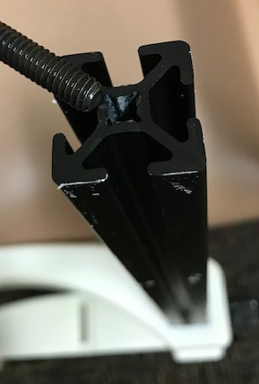
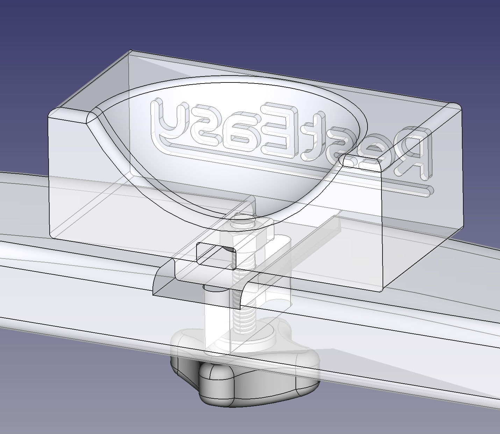
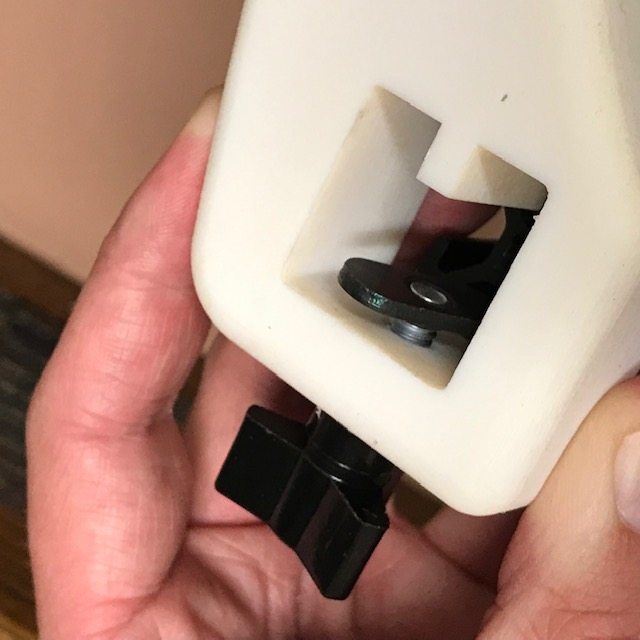
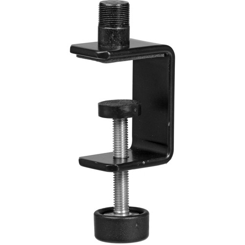

RestEasy¶
An open-source chin rest design for human psychophysics research.
Summary¶
In behavioural psychophysics experiments it is often critical for observers to maintain a stable head position in relation to the stimulus, both within and across experimental sessions. Further, behavioural performance can be significantly affected by attention and fatigue, so it is important to ensure that observers remain as comfortable as possible throughout an experiment. However, there are few commercially available options for chin rests, and -being a specialist item- those that do exist are often costly.
Chin rest |
Manufacturer |
Price range |
Intended use |
|---|---|---|---|
$600 - $1000 |
Research |
||
$600 |
Research |
||
Richmond Products |
$247 |
Clinical |
|
$395 |
Clinical |
||
Clinical |
Fortunately, it is relatively easy to produce a chin rest of comparable strength and functionality at lower cost, without compromising aesthetics and with only minimal user assembly required. The open-source RestEasy design is intended for those who lack either the funds, time, or access to a machine shop to design and produce their own chin rest. All component parts can be ordered online for under $200 (depending on some options) and fall into two categories:
1) Commercially available components These include machined, extruded, black-anodized aluminium profile, fittings, machine screws, plastic knobs, nuts and washers. These are available from many vendors worldwide, but for users based in the US, sources are listed below for Misumi, 8020, and McMaster-Carr.
2) Custom designed plastic components The design of the custom components was generated in the open-source CAD package FreeCAD, and the original file is provided to allow users to make alterations to fit their specific needs. Additionally, .STL (stereolithography) files ready for immediate 3D-printing can be downloaded, which can be sent to either your institution’s machine shop or your nearest prototype manufacturer/ 3D-printing service (see links below) for production.
The standard version of the RestEasy chin rest clamps to the edge of table surfaces up to 2” thick, offers adjustable-height chin and forehead rests (up to a maximum determined by the length of aluminum profile used) and is 12” (imperial) or 24cm (metric) wide. Further variations can be created by editing the CAD file provided.
Materials¶
Custom produced plastic parts¶
There are five custom-designed parts to the RestEasy, that need to be custom manufactured in plastic. The parts can be downloaded from Thingiverse as stereolithography (.stl) files ready for 3D printing, or the FreeCAD (.FCStd) parametric file for further editing and export in formats suitable for CNC machining or injection molding. These plastic parts will be the most expensive components, depending on the availability of local prototyping facilities. Since they will be in contact with participants’ chin and forehead, they need to be strong and comfortable against the skin. Here are some options for achieving this in ascending order of cost (and summarized in the table below):
Method |
Company |
Material |
Cost |
|---|---|---|---|
3D-print |
`Re3Tech <https ://www.re3dtech .com/3d-composi tes/3d-onyx-rap id-prototyping/ >`_ |
Onyx (carbon-filled nylon) |
$422.32 |
3D-print |
ABS |
$266.31 |
Commercially available parts¶
1. Aluminium profile. Extruded aluminium profile is easily available, it’s strong, light weight, easy to attach things to (e.g. eye tracking cameras, 3D-glasses, etc.) and is available in anodized matt black, which reduces reflections. For the purpose of the RestEasy, it is recommended to use either 1x1” or 30x30mm profile from one of the manufacturers listed below.
Metric version (UK / EU)¶
Vendor |
Part # |
Description |
Quantity |
Price (each) |
|---|---|---|---|---|
Misumi |
30x30mm aluminium profile x 600mm, 15mm M8 tapped holes |
2 |
€ 7.32 |
|
Misumi |
Bolt retained black plastic end caps |
2 |
€ 2.30 |
|
Misumi |
M8, 30mm hex screws |
2 |
€ 1.00 |
|
Misumi |
M8 washers |
2 |
€ 0.19 |
|
Misumi |
T-slot nuts, M5 |
4 |
€ 0.34 |
|
Misumi |
Plastic 3-lobed knob with M5 thread 20mm long |
4 |
€ 1.60 |
|
Misumi |
Plastic 4-arm knob with M6 thread, 30mm long |
1 |
€ 2.50 |
|
Misumi |
Plastic 7-arm knob with M8 thread |
2 |
€ 2.05 |
|
Misumi |
M8 hex nut |
2 |
€ 2.01 |
|
Misumi |
M6 hex nut |
1 |
€ 1.98 |
|
Misumi |
M8 threaded rod, 100mm |
2 |
€ 1.40 |
|
Misumi |
M8 rubber levelling feet |
2 |
€ 5.11 |
|
Total |
€ 55.00 |
Imperial version (US)¶
Vendor |
Part # |
Description |
Quantity |
Price (each) |
|---|---|---|---|---|
8020.net |
1x1” black aluminium profile x 24”, with tapped 1/4”-20 end holes |
2 |
$13.47 |
|
8020.net |
Bolt retained black plastic end caps |
2 |
$1.20 |
|
8020.net |
1/4”-20 slide in T-nut |
4 |
$0.21 |
|
McMaster |
1/4”-20 button head hex screws, 2” long (10 pack) |
1 |
$8.37 |
|
McMaster |
Plastic 3-arm knob 1/4”-20 thread, 3/4” long |
4 |
$1.05 |
|
McMaster |
Plastic 5-arm knob 3/8”-16 thread |
2 |
$1.49 |
|
McMaster |
Plastic 4-arm knob 1/4”-20 thread, 1 1/4” long |
1 |
$2.70 |
|
McMaster |
Steel hex nuts, 3/8”-16 thread (100 pack) |
1 |
$5.76 |
|
McMaster |
Leveling feet, 3/8”-16 threaded |
2 |
$6.10 |
|
McMaster |
4”, 3/8”-16 threaded steel rod |
2 |
$2.10 |
|
McMaster |
Thin lock nuts, 3/8”-16 thread, pack of 25 |
1 |
$6.23 |
|
TOTAL = |
$76.78 |
Assembly¶
Finishing 3D-printed parts¶
Depending on the 3D-printing method used, some parts may have expanded or contracted. Additionally, some surfaces may have a rough laminar structure with high friction. To ensure a good fit and minimize mechanical resistance between parts, it may therefore be necessary to manually finish some surfaces. For smoothing surfaces or removing material, sanding and/or filing may help. All of the holes in the plastic parts of this design are through-holes, meaning that they should be big enough for the corresponding threaded parts to pass through easily with little friction. Check the fit of all parts before assembly and if necessary, drill the holes to enlarge them.
Part assembly¶
1. Clamps.
Each of the aluminium profile pieces should have a tapped hole (1/4”-20 thread) 1.5” deep at one end. Insert this end into the square slot on top of the plastic clamp. Insert a 1/4”-20 button head hex screw through the corresponding sized washer, and then up through the hole in the top half of the plastic clamp and screw into the aluminum profile. Next, insert the 3/8”-16 threaded steel rod through the hole in the lower half of the plastic clamp and through a 3/8”-16 hex nut, before screwing on one of the leveling feet. On the lower end of the rod, attach the plastic 5-arm knob. You may wish to place a small drop of super glue around the outer surface of the 3/8”-16 hex nut, just to secure it in place, but be careful not to get any glue on the thread. Repeat this process for the other half of the stand.
2. Chin rest.
Slide the 1/4”-20 hex nut into the small slot on the side of the chin rest cup that faces the subject. You may need to remove any 3D-printer support materials from inside this slot before hand. You will need to jiggle the hex nut around a little until it’s lined up with the hole in the base of the chin cup. Next, line up the groove on the bottom of the chin cup with the groove on the horizontal chin rest support bar. Insert the threaded plastic 4-arm knob through the slot in the chin rest support bar and into the hole in the base of the chin rest cup. With the hex nut lined up, screw the 4-arm knob into it.
3. Side posts.
For each side of each horizontal support bar, insert one of the plastic 3-arm knobs through the hole on the outer side. On the inside of the post slot, screw the 3-arm knob thread loosely into a slide in T-nut. Next, insert the aluminium profile posts into the post holes, lining the T-nut up with the T-slot of the profile. Once both sides of both horizontal bars are inserted, attach the plastic end caps to the ends of the aluminium profile.
Alternative constructions¶
One modification that may reduce cost is to use off-the-shelf table clamps designed for microphones (typically with 5/8”-27 threads). Clamps such as the K&M 270 are sturdily constructed from steel, clamp surfaces up to 1.75” thick and are reasonably priced. Commercially available 5/8”-27 to 1/4”-20 adapters are available, but are typically made from softer metals that will not be strong enough to attach the T-slotted vertical posts to these clamps. We therefore recommend using a steel adapter for this purpose.

{kind=link}
{kind=link}
{kind=link}
{kind=link}
{kind=link}